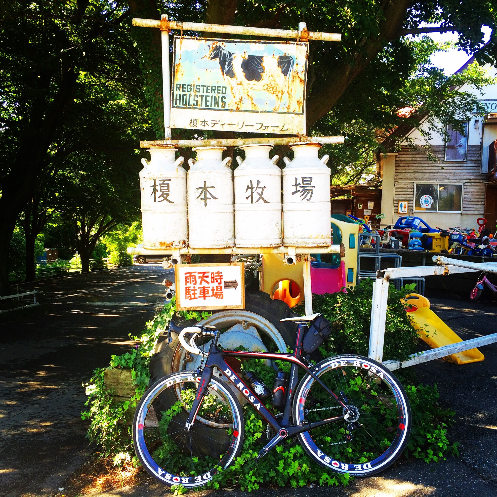

玄関を出た瞬間から始まる。
スキー場へ行くには準備が必要です。でもロードバイクなら、いつもの道路が少し違って見えます。
Experience Report / Road Bike
地図は変わらない。でも、ロードバイクに乗ると、自分の中の地図の縮尺が変わる。 移動が、運動になり、気分転換になり、ちょっとした冒険になる体験です。
スキー場へ行くには準備が必要です。でもロードバイクなら、いつもの道路が少し違って見えます。
5キロ先、10キロ先が、自然に自分の生活圏へ入ってくる。遠いという感覚が、行けるに変わります。
電車や車で移動していた時間を、ときどきロードバイクに置き換える。移動、運動、気分転換を一つに重ねられます。


Story
ロードバイクにまたがり、ビンディングシューズをペダルにカチッとはめる。その小さな音がすると、いつもの道路が少し違って見えます。家を出た瞬間から、目の前の道路が、自分だけのゲレンデになります。
ロードバイクの魅力は、単に速く走れることではありません。普通の自転車では少し遠いと思う場所にも、ロードバイクなら行ってみたくなることです。
自宅から新宿まで、普通の自転車で行こうとは、あまり思いません。でも、ロードバイクに乗っていると、天気も良いし、今日は走って行ってみようかな、と思える。
私自身、都内の移動で10キロ前後の距離であれば、できるだけロードバイクで行くようにしています。表参道まで行くことも、特別な遠出ではありません。
5キロ歩くとなると、それなりに構えます。歩く速さによっては、1時間ほどかかります。でも、ロードバイクなら、道路や信号の状況によっては15分、20分ほどで着くこともあります。
地図は変わっていません。でも、ロードバイクに乗ると、自分の中の地図の縮尺が変わります。
Distance
本格的にロードバイクを楽しんでいる人たちは、距離感が少し変わっています。最初は、10キロ走っただけでも、かなり遠くまで来たように感じます。
やがて、30キロ、50キロと走れるようになる。そして慣れてくると、100キロ走って、今日はそこそこ走ったな。150キロ走ると、今日はしっかり走ったな。200キロ走ると、今日はかなり走ったな、という世界です。
もちろん、最初から長距離を目指す必要はありません。競技に出る必要もない。誰かと速さを競う必要もない。まずは、いつもなら電車で行く場所まで走ってみる。それだけでも十分です。
Daily Use
ロードバイクの良いところは、運動のためだけに特別な時間をつくらなくてもよいことです。電車や車で移動していた時間を、ときどきロードバイクに置き換える。それだけで、移動がエクササイズになります。
風を感じる。季節の変化に気づく。頭の中が整理される。目的地に着くころには、少し身体も温まっている。
移動、運動、気分転換。ひとつの行動で、二鳥どころか三鳥くらいの効果があります。運動のためだけに予定を増やすのではなく、すでにある予定の中に運動を重ねられる。忙しい日常の中で、これは意外に大きな違いです。

First Bike
ロードバイクというと、高価な自転車を想像する人もいるかもしれません。確かに、上を見ればきりがありません。フレームの素材。ホイール。変速機。ウェアやシューズ。こだわり始めると、奥の深い世界です。
でも、最初から高価なモデルを買う必要はありません。私自身も、最初から高価なロードバイクに乗っていたわけではありません。エントリーモデルでも、普通の自転車との違いは十分に感じられます。
軽くペダルを踏むだけで、思っていた以上に滑らかに進む。少し遠くまで行ってみたくなる。今まで電車で通り過ぎていた町が、自分の生活圏に入ってくる。まずは、その感覚を味わうだけでも十分です。
Mechanic
ロードバイクは、買って終わりの道具ではありません。日常的な手入れは、自分でも少しずつ覚えていきます。タイヤに空気を入れる。チェーンをきれいにする。乗る前にブレーキを確認する。
一方で、乗り続けていると、自分だけでは対応しにくい調整や消耗品の交換も出てきます。変速機の微妙な違和感。ブレーキの調整。身体に合わせたポジション。ホイールやチェーンの状態。
そんなとき、いつも自転車のコンディションを知っているメカニックがいるかどうかで、ロードバイクの楽しみは大きく変わります。少し気になることがあれば相談できる。乗り方や使い方に合わせて、必要な調整をしてもらえる。
ロードバイクを始めるなら、自転車そのものだけではなく、長く面倒を見てくれるメカニックから購入する。私は、それをおすすめします。
良い道具を持つこと以上に、良い主治医を持つことが大切です。

Professional
私は、お金に関わる仕事をしています。保険、資産形成、不動産、相続。どれも、インターネットで検索すれば、たくさんの情報が出てきます。
それでも、情報だけでは解決できないことがあります。その人の状況を知っていること。少しの違和感に気づくこと。長く付き合いながら、必要なタイミングで調整すること。
ロードバイクも、お金の相談も、意外によく似ています。私は、お金については専門職ですが、自転車については専門家ではありません。だからこそ、自分の専門外のことは、信頼できる人に頼ります。
餅は餅屋。専門家に頼ることは、ぜいたくではありません。自分だけで全部を抱え込まず、安心して長く楽しむための方法だと思います。
Commute
以前、お客様にロードバイクをおすすめしたことがあります。その方は、電車で通勤していました。毎月の通勤費を払い、電車に乗り、会社まで移動する。それは、ごく普通の日常です。
そこで、会社のルールを確認したうえで、自転車通勤に切り替えました。これまで通勤のために使っていたお金や時間の一部を、ロードバイクや必要な装備に置き換える。特別に大きな支出を増やすのではありません。
すると、通勤時間の意味が変わります。電車に揺られる時間が、身体を動かす時間になる。運動不足の解消になる。朝から少し気分が良くなる。帰り道には、仕事の頭を切り替えられる。
お金の使い方を少し組み替えるだけで、毎日の生活が楽しくなることがあります。ロードバイクは、休日だけに楽しむ趣味ではありません。日常の中に、少しずつ楽しさを増やしてくれる道具です。

Three Axes
良い体験は、遠くへ旅行したり、高いお金を払ったりすることだけではありません。身近な場所の見え方が変わることも、立派な体験です。
電車や車で移動していた時間を、身体を動かす時間に変える。同じ時間やお金を使いながら、得られる満足度を増やせます。
エントリーモデルでも楽しめること、自分で手入れをすること、難しい作業は専門家に頼ることを、周囲の人に共有できます。
Support Axes
エントリーモデルでも楽しさは十分に味わえます。日常生活に取り入れるほど、費用対効果が高くなります。
乗ること自体が楽しく、結果として有酸素運動になります。無理をせず、交通ルールと身体に合った調整を大切にします。
移動時間と運動時間を重ねられます。運動の予定を新たに追加しなくても、日常の中に身体を動かす時間をつくれます。
Scenes


Closing
スキー場に行くには、準備が必要です。でも、ロードバイクなら、玄関を出たところから始められます。特別な旅行に出かけなくてもよい。高価な一台を買わなくてもよい。まとまった休みを取らなくてもよい。
信号待ちをしながら、季節の空気を感じる。知らなかった店を見つける。川沿いの道で、少しだけスピードを上げる。ロードバイクは、日常のすぐ隣に小さな冒険があることを思い出させてくれる乗り物です。
体験メニュー一覧へ戻る